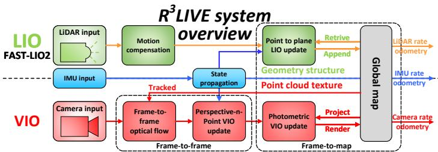
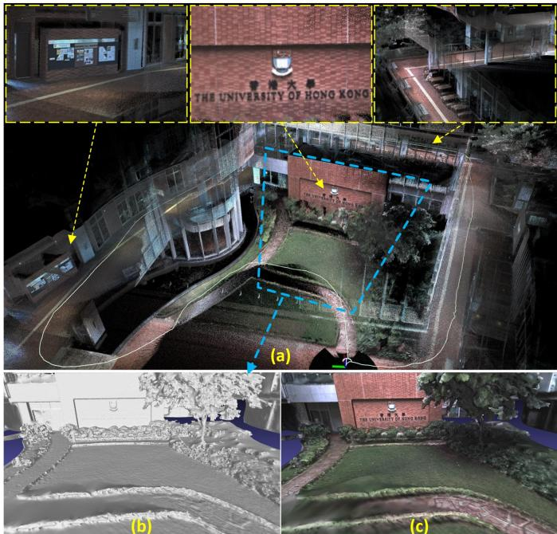
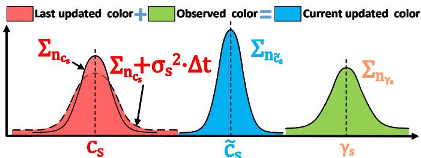
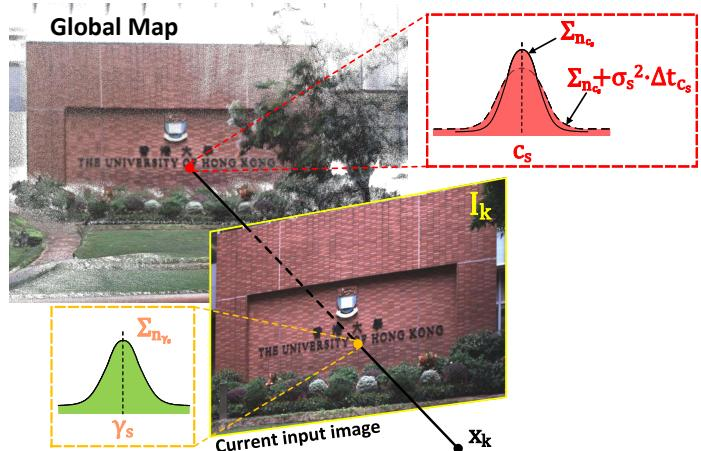
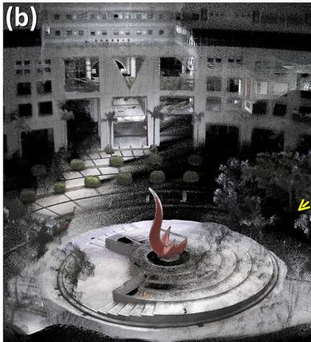

阶段 E · 多传感器融合 / Lesson 0096
R³LIVE（2022）：两条流水线并行
一台车上的激光管几何、相机管颜色，最后拼成一张会发色的点云 🎨
🎯 主题：紧耦合双流水线 · RGB 着色点云 · 直接法 VIO
👥 作者：Jiarong Lin、Fu Zhang（香港大学）
📅 2022 · ICRA · R³LIVE: A Robust, Real-time, RGB-colored, LiDAR-Inertial-Visual tightly-coupled state Estimation and mapping package
本节目标
读完你应该能：说清 R³LIVE 的两条并行流水线各管什么、共用什么；解释一个激光点怎样被赋上颜色；讲明视觉那一路为什么「不提特征、不维护逆深度」；并指出它的 LIO 内核与第四季 FAST-LIO 系的关系。
和前面课程怎么接
它的 LIO 内核直接承自第四季 0083 /0084 FAST-LIO2（紧耦合 ESIKF + 直接配准、不提特征）；IMU 部分靠第二季 0029/0030 预积分；视觉那一路是第三季 0046–0050 直接法（DSO / SVO 的光度误差）在三传感器上的升级，而 0057 VINS-Mono 是「视觉 + 惯性」双传感器前驱。
1. 一个名字的小插曲（先澄清排版）
先说一个你读原始 md 文件时会撞见的怪事：论文标题和正文里到处是 R<sup>3</sup>LIVE 这种写法，那是把上标 ³ 误写成了 HTML 标签残留。论文的真名是 R³LIVE （R 立方 LIVE，³ 表示 LiDAR-Inertial-Visual 三件套），不是「R 小于 sup 3 大于 LIVE」。同样，它的前身 R²LIVE 里的 ² 也被同样污染过。
这条信息看起来是小事，但它提醒我们：读论文原文件时，OCR 和排版残留会骗你 。本季每一篇都带着这类残留，下面凡出现上标的数字（³、²、°），我们都按「真实上标」来读，不再照搬那串标签。
2. 它要解决什么
R³LIVE 想解决的问题很朴素：让一台同时背着激光雷达、相机、IMU 的小车，一边走一边实时造出一张「带真实颜色」的三维点云地图。
为什么这件事难，要三样传感器一起上？原文给了三个动机：
① 纯激光在退化处会垮
当几何特征不够（比如小视场角的固态雷达、单面墙的长走廊），激光 SLAM 很容易失败——这正是第四季 0084 课讲过的「开阔墙面 / 天空」退化。
② 纯视觉缺深度、低纹理也垮
相机没有深度，遇到白墙这种「没有纹理」的场景，特征法直接没东西可跟踪。
③ 旧的多传感器框架要么松、要么只定位
已有的 LiDAR-Visual 系统大多是松耦合 ，而且只做定位、不重建彩色地图。R³LIVE 要的是「紧耦合 + 同时定位 + 建图 + 给点云上色」一条龙。
所以它的定位一句话就能说清：用「激光建几何 + 相机给颜色」两条并行流水线，实时产出密集 RGB 着色点云的紧耦合 SLAM 系统。 注意这里「着色」是把原始像素颜色贴上去，还不是 下一篇要讲的「辐射重建」——这点差别我们留到 0097 课再展开，现在先吃透「两条线并行」。
3. ★ 两条并行流水线：几何与纹理各走一路
这是本课的主干。R³LIVE 的摘要里原话是：「R³LIVE 由两个子系统组成，激光惯性里程计（LIO）和视觉惯性里程计（VIO）。」 这两个子系统不是各算各的，而是跑在同一个状态向量 x 上 ——也就是紧耦合。
一个关键澄清
初学者最容易在这里想错：以为 LIO 和 VIO 是两套独立估计 ，位姿各估各的。原文不是这样。整个系统只维护一个状态向量 x （含位姿、速度、陀螺 / 加计偏置、重力、相机外参、IMU-相机时差、相机内参），LIO 用激光把几何与位姿推进去，VIO 用视觉光度残差在同一份 x 上继续修正。所以结论是：几何与纹理各走一路，但位姿只有一个。
把状态向量写出来（原文式 1），你能看清它管了哪些量：
${}^G\mathbf{R}_I,{}^G\mathbf{p}_I$ 是车体位姿；${}^G\mathbf{v}$ 是速度；$\mathbf{b}_g,\mathbf{b}_a$ 是陀螺和加计偏置；${}^G\mathbf{g}$ 是重力；${}^I\mathbf{R}_C,{}^I\mathbf{p}_C$ 是相机相对 IMU 的外参；${}^I t_C$ 是相机相对 IMU 的时间差；$\boldsymbol{\phi}$ 是相机内参。LIO 与 VIO 共用这一整个 x。
两条流水线并行：几何与纹理各走一路，但位姿只有一个
同一次状态估计
状态 x（位姿·速度·偏置·相机内外参）
激光惯性里程计 LIO —— 管几何：点 · 平面 · 位姿
视觉惯性里程计 VIO —— 管纹理：颜色 · 亮度
RGB 着色点云
几何 + 颜色 汇合
两条线从「同一次状态估计」出发，末端汇入同一个着色点云
位姿只有一个，几何与纹理只是它的两种「产出」
这张图在画什么： 同一台车里的两套子系统——上面 LIO 负责把几何（点的位置、平面、位姿）估出来，下面 VIO 负责把颜色（纹理）估出来，它们都从「同一个状态估计 x」出发，最后在右侧汇合成一张 RGB 着色点云。怎么看这张图： ① 中间左边那个橙色框是共享的状态 x ，两条线都从它分出来；② 上路绿色框写的是「点 · 平面 · 位姿」，下路蓝色框写的是「颜色 · 亮度」；③ 右边红色框是汇合点——几何与纹理在这里合体 ；④ 注意不是「两个位姿框」，而是「一个位姿、两种产出」。要记住的一句话： 几何和纹理各走一路，但位姿只有一个 ——这是紧耦合和「两套独立估计」最根本的区别。

原图注（Fig. 2）： The overview of our proposed system.（我们提出的系统总览。）怎么看这张图： 这是论文自己的系统图，正是上面那张自绘图的「原始版」。请盯住它上下两块的划分——上块是 LIO（建几何），下块是 VIO（上色） ，中间是共用的状态估计。它和我们的自绘图一一对应，只是论文图里还画了 IMU 预积分、ESIKF 更新等内部箭头。
互动判断
关于 R³LIVE 里 LIO 与 VIO 的关系，下面哪句是对的？
两路共用同一个位姿
两套独立估位姿
4. ★ RGB-colored 点云是怎么来的
「给点云上色」说起来就一句话，做起来是两步：先把每个激光点的三维坐标投到相机图像上、取那个像素的颜色；再用多帧观测加权融合。
地图里每个点存的是 $\mathbf{P}=[^G\mathbf{p}^T,\mathbf{c}^T]^T\in\mathbb{R}^6$——前 3 个量是它在世界坐标系下的位置，后 3 个量是它的 RGB。注意：这里存的是「颜色」，不是「逆深度」 ，这点下一节还要强调。上色的具体动作是：把这个 3D 点用当前位姿和相机内参投影到图像平面，取它落到的那个像素的 RGB，作为这次观测色 $\boldsymbol{\gamma}_s$。
同一面墙会被车经过好几次，每次取到的颜色略有差异（光照、噪声、曝光不同）。R³LIVE 不是「简单取最后一次」，而是用贝叶斯逆协方差加权 把历史色和新观测融合起来（原文式 32–34）：
人话翻译：颜色不是「最新的覆盖旧的」，而是「谁的观测更可信（协方差小）谁权重更大」地加权平均 。$\Sigma_{\mathbf{n}\boldsymbol{\gamma}_s}^{-1}$ 是这次观测的置信度，$\sigma_s^2\Delta t_{\mathbf{c}_s}$ 表示历史色会随时间缓慢漂移（随机游走噪声），融合后同时更新颜色 $\tilde{\mathbf{c}}_s$ 和它的不确定度 $\Sigma_{\mathbf{n}\tilde{\mathbf{c}}_s}$。
一个激光点怎么被赋上颜色
激光雷达
相机
砖墙
激光点
相机拍到的画面
落在这里的像素
放大：这个像素是砖红色
车往前开：同一面墙被多帧看到
帧1 偏暗
帧2 正常
帧3 偏亮
加权融合
按置信度加权，不取最后一次
这张图在画什么： 左边演示「一个激光点如何拿到颜色」——把墙上的那个红点投影到相机画面里它落到的像素，颜色就从那个像素取；右边演示「同一面墙被多帧看到时，颜色不是最后覆盖前面，而是加权融合」。怎么看这张图： ① 红色虚线从墙上的激光点连到相机画面里的砖红像素，这一下就是「投影取色」；② 放大镜强调「颜色就来自这个像素」；③ 右下方三个不同深浅的圆代表三次观测到的颜色，汇入「加权融合」框——越清晰的观测权重越大 。要记住的一句话： 点云的颜色 = 把 3D 点投到图像取像素 + 多帧按置信度融合，不是简单地把最后一帧看到的颜色贴上去 。

原图注（Fig. 1）： Our developed R³LIVE is able to reconstruct a dense, 3D, RGB-colored point cloud of the traveled environment in real-time. The white path is our traveling trajectory for collecting the data.（我们开发的 R³LIVE 能实时重建所经环境的密集三维 RGB 着色点云，白色路径是采集数据时的行进轨迹。）怎么看这张图： 这是论文的主打产出。(a) 是实时重建的密集彩色点云加白色轨迹；(b)(c) 是把点云离线网格化并贴上纹理后的结果。请盯住 (a)——它就是上面那套「激光建几何 + 相机给颜色」拼出来的东西 。

原图注（Fig. 5）： We render the color of the point via Bayesian update.（我们通过贝叶斯更新来渲染点的颜色。）怎么看这张图： 这张图对应我们上面的贝叶斯融合公式。它直观展示了「同一个点在不同帧被观测到、颜色略有不同」时，系统怎么把它们融成最终那个颜色。和自绘图右下半区是同一件事。
5. ★ 视觉那一路：直接法、不提特征、不维护逆深度
视觉 SLAM 的常识是「提角点 → 三角化 → 估每像素逆深度」。R³LIVE 的 VIO 完全不按这个剧本走 。这是零基础读者最该被纠正的一点。
它是直接法，不是特征法
VIO 不找角点、不找线，而是直接用光度误差 ：把地图里一个已知 3D 位置和已知颜色的点，投影到当前帧，比「地图里存的红」和「照片该像素的红」差多少，差多少就用来调位姿。这正是第三季 0046–0050 直接法（DSO / SVO）的思路在三传感器上的版本。
它不维护逆深度
普通直接法（如 DSO）会在照片里给每个像素估一个逆深度。R³LIVE 不这么做——它维护的是地图里已知 3D 位置和颜色的点集 $\mathcal{P}$ 。深度由激光给，视觉只管「颜色对不对」。
VIO 内部其实分两步（原文）：先 frame-to-frame （用 Lucas–Kanade 光流跟踪地图点，再用 PnP 重投影误差做 ESIKF 更新），再 frame-to-map （最小化光度误差做 ESIKF 更新）。其中 frame-to-map 的光度残差写法是（原文式 19）：
$\mathbf{c}_s$ 是地图里这个点存的颜色，$\boldsymbol{\gamma}_s$ 是当前图像里该点邻域双线性插值得到的观测色。误差 = 地图色 − 观测色 。注意它参考的是地图里 3D 点的颜色 ，而不是逆深度——这正是和「特征法靠重投影、直接法靠逆深度」最大的不同。

原图注（Fig. 4）： Our frame-to-map ESIKF VIO update the system state by minimizing the photometric error between the map point color and its measured color in the current image.（我们的 frame-to-map ESIKF VIO 通过最小化地图点颜色与当前图像中观测色之间的光度误差来更新系统状态。）怎么看这张图： 它把「直接法光度误差」画得很直白——不是去找角点重投影，而是拿地图里点的颜色去和照片里看到的颜色比。这就是 VIO 不提特征、不估逆深度的可视化证据。
互动判断
R³LIVE 的 VIO 靠什么来修正位姿？
地图点的光度误差
角点重投影误差
6. ★ 与第四季 FAST-LIO 系的关系
你一定会问：「LIO 那一路的内核到底是什么？」 原文写得很清楚——它的 LIO 内部就是 FAST-LIO 一系 ：紧耦合的 ESIKF（误差状态迭代卡尔曼滤波）、直接拿点云配准、不提特征 。这条线你已经在第四季见过：
系统
本季位置
与 R³LIVE 的关系
FAST-LIO （0083）紧耦合 ESIKF 增益公式
R³LIVE 的 LIO 内核直接承自这一支
FAST-LIO2 （0084）ikd-Tree + 直接配准
「不提特征、直接配准」一侧；R³LIVE++ 更明确写「基于 FAST-LIO2」
LOAM （0074）提特征两步优化
对照侧：R³LIVE 的 LIO 属「不提特征直接法」，区别于它
LIO 的几何残差用的是点-面距离（原文引用 FAST-LIO / R²LIVE）：
$\mathbf{u}_s$ 是平面法向，${}^G\mathbf{p}_s$ 是地图点，$\mathbf{q}_s$ 是平面上一点——点到平面的垂直距离 。这正是第二季 0022 课（点云 BA 点到面残差）同宗的式子。所以 R³LIVE 的 LIO 一路，本质是「第四季 FAST-LIO 直接配准 + 第二季预积分 + 第二季点到面残差」的复用，真正的新意在上面那条 VIO 流水线 。
7. 实验数字：精度、速度、点云规模
原文的实验相当扎实，照正文抄关键数字：
平台 ：手持设备 = DJI Manifold-2C（Intel i7-8550U, 8GB）+ FLIR Blackfly 全局快门相机 + Livox Avia 激光；对比台式 i7-9700K / 32GB。Experiment-1（激光退化 + 无纹理） ：用 ArUco 板测终点漂移 1.62° 旋转 / 4.57 cm 平移 。Experiment-2（HKUST 四趟） ：长度 1317 / 1524 / 1372 / 1191 m；平移漂移 0.093 / 0.154 / 0.164 / 0.102 m，旋转漂移 2.140 / 0.285 / 2.342 / 3.925°；无回环处理即自发闭环 。Experiment-3（Belcher Bay 海港，D-GPS RTK 真值） ：R3LIVE-HiRES 在 300 m 子段 RRE 0.21° / RTE 0.17%；对照 VINS-Mono（纯视觉）50 m 已达 3.03° / 10.41%，LVI-SAM 300 m 为 0.43° / 2.40%。速度（表 IV） ：台式 VIO 每帧 320×256 → 7.01 ms、1280×1024 → 13.63 ms；LIO 每帧 18.40 ms。机载：VIO 320×256 → 15.0 ms、1280×1024 → 33.4 ms；LIO 39.56 ms。地图规模 ：体素 0.1 m³，点分辨率约 1 cm，是密集点云。

原图注（Fig. 9）： We show the dense 3D RGB-colored maps reconstructed in real-time in Experiment-2. In (a), we merge our maps with the Google Earth satellite image and find them aligned well. Details of the map are selectively shown in (b), (c), and (d). In (e), we show that our algorithm can close the loop itself without any additional processing.（我们展示 Experiment-2 中实时重建的密集三维 RGB 着色地图。(a) 把地图与 Google Earth 卫星图合并且对得很准；(b)(c)(d) 是地图细节；(e) 显示算法无需额外处理就能自己闭合回环。）怎么看这张图： 这是大尺度实时建图的证明。(a) 里地图和卫星图对齐，说明漂移很小；(e) 显示它没有跑回环检测模块 却自己把路闭环了——这是密集彩色点云低漂移的直接证据。
8. 原文的边界与局限
论文自己承认的短板，逐条记下（这些正是下一篇 R³LIVE++ 的动机）：
① 没有回环校正模块
长程靠「自发闭环」消除一部分漂移，但累积漂移没有被显式消除。这一条在 R³LIVE++ 才被明确列为未来工作。
② 未做曝光 / 光度标定
它只存原始像素 RGB，不能按任意曝光重渲染 。换一帧曝光、换个光照，颜色就失真。这正是 0097 课 R³LIVE++ 要解决的。
③ 视觉依赖激光给的几何
VIO 跟踪的是「被激光几何支撑的地图点」——如果几何缺失（激光退化），VIO 就没点可跟踪。反过来，三传感器互补恰好弥补单传感器退化。
所以 R³LIVE 的价值和边界都很清楚：它第一次把「激光几何 + 相机颜色」在紧耦合框架里实时拼成一张彩色点云 ，但颜色只是「贴上去的原始像素」，还不是物理量。下一篇我们就看它怎么把颜色升级成「与曝光无关的辐射量」。
课后练习
为什么 R³LIVE 说「几何与纹理各走一路，但位姿只有一个」？请结合状态向量 x 说明。
展开查看答案
因为全系统只维护一个状态向量 x ，里面同时装着位姿、速度、偏置、重力、相机内外参。LIO 用激光点-面残差、VIO 用视觉光度残差，都在同一份 x 上做 ESIKF 更新。
所以「几何」（点的位置、平面）和「纹理」（点的颜色）是同一个位姿估计的两种产出 ，而不是两套独立的位姿估计。这正是紧耦合和「两套独立估计」的根本区别。
请用自己的话解释：一个激光点被赋上 RGB，需要经过哪两个动作？为什么不是「取最后一次看到的颜色」？
展开查看答案
两个动作：① 投影取色 ——把点的三维坐标用当前位姿和相机内参投到图像，取落到的那个像素的 RGB，作为这次观测色；② 多帧加权融合 ——同一面墙被车经过多次，每次观测色略有不同，系统用贝叶斯逆协方差加权融合，越可信的观测权重越大。
不是「取最后一次」的原因：单次观测受光照、噪声、曝光影响会有偏差，加权融合能把偏差平均掉、得到更稳的颜色。这正是式 32–34 在做的事。
R³LIVE 的 VIO 和传统特征法视觉 SLAM（如 ORB-SLAM）有什么不同？请至少指出两点。
展开查看答案
① 不提特征 ：VIO 不找角点 / 线，而是直接用法度误差；② 不维护逆深度 ：它维护的是地图里已知 3D 位置和颜色的点集，深度由激光给，视觉只管颜色对不对。对照之下，特征法靠角点重投影、靠三角化估逆深度。
这也解释了为什么 R³LIVE 在「无纹理环境」（白墙）更鲁棒——它不依赖照片里有角点可提。
R³LIVE 的 LIO 内核来自哪一系？它的几何残差是什么形式？这和我们前面哪节课同宗？
展开查看答案
来自 FAST-LIO 一系 （第四季 0083 / 0084）：紧耦合 ESIKF + 直接点云配准、不提特征。几何残差是点-面距离 $\mathbf{r}_l=\mathbf{u}_s^T({}^G\mathbf{p}_s-\mathbf{q}_s)$，和第二季 0022 课（点云 BA 点到面残差）同宗，也和第四季 FAST-LIO / LOAM 的几何约束一脉相承。